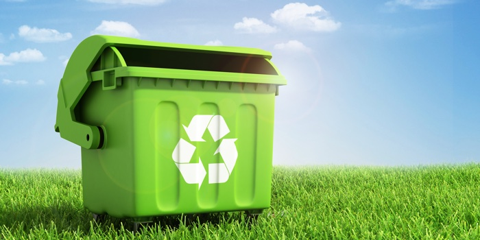

<ion-header>

  <ion-toolbar>
    <button ion-button menuToggle >
      <ion-icon name="menu" ></ion-icon>
    </button>
    <ion-title>Welcome {{username}}</ion-title>
  </ion-toolbar>

</ion-header>


<ion-content padding>
  <ion-card (click)="onViewPins()" >
    
    <ion-card-header>
      View Littered Locations
    </ion-card-header>
    <ion-content>
      <p>Plan your journey by avoiding locations which are filled with litter</p>
    </ion-content>
  </ion-card>
</ion-content>
